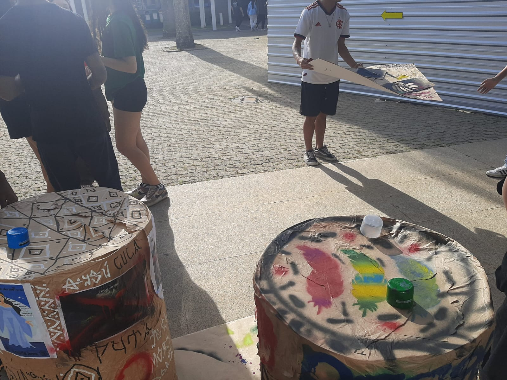
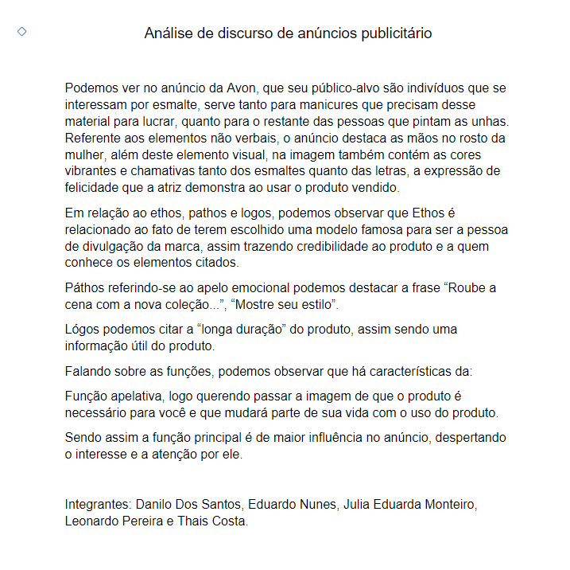
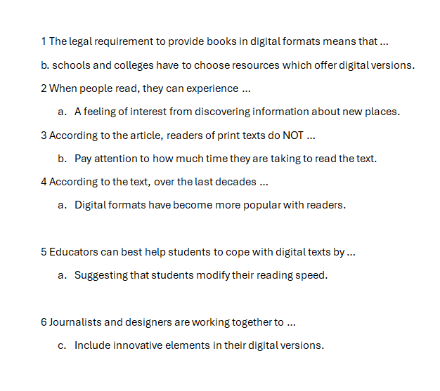

Educação física: Aprendemos bastante coisa em nessa matéria, mas o trabalho que mais me marcou foi o que tivemos que dançar, adorei fazer esse por gostar de dançar e por me identificar com o grupo que fiz esse trabalho.
Português: Estudei sobre gêneros textuais, aprendi que são tipos de textos usados no dia a dia, como cartas, notícias e bilhetes, cada um com uma função e contexto específico.
Arte: Em artes fizemos vários diarios de bordo sobre o que produzimos e aprendemos durante o ano, foi achei uma forma bem criativa do professor nos fazer prestar atenção nas aulas, ja que os diarios eram mais ou menos 1 página por cada aula do bimestre. Confesso que a matéria que eu mais gostei de aprender foi a diferença entre pixo (protesto) e grafite (arte).
Educação física: Aprendemos a diferença entre jogos e brincadeiras. Tivemos que fazer um trabalho apresentando uma brincadeira, esse trabalho foi um que me marcou, pois eu e meu grupo fizemos uma forma de video clipe, onde brincavamos de amarelinha enquanto eu cantava a uma paródia da música Vampiro - Matuê feita por nós.
Português: Esse ano tiveram vários trabalho interessantes em Português, esse é um desses, tivemos que analisar um anúncio da Avon e destacar a estrutura visual e textual dela.
Inglês: Vimos bastante coisa esse ano, falamos sobre "Rape Culture", vimos o simple past e past countinuous e verbs. Essa é a tarefa mais recente que eu fiz.
Infelizmente, não tenho fotos de algumas tarefas porque já faz bastante tempo, mas lembro de algumas coisas que estudei e aprendi nessas matérias.